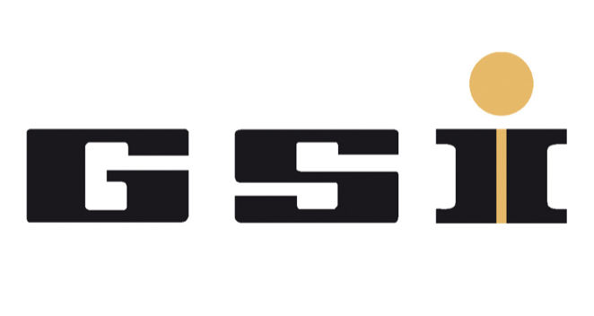

Designed Generative AI automation workflows reducing manual document validation effort from ~4 hrs/day to 15–20 min/day
Built enterprise workflow automation pipelines across 15+ departments and multiple data sources, reducing monthly processing effort from 2 days to 20 min
Translated business requirements into production-oriented GenAI use cases using document-processing and orchestration pipelines
